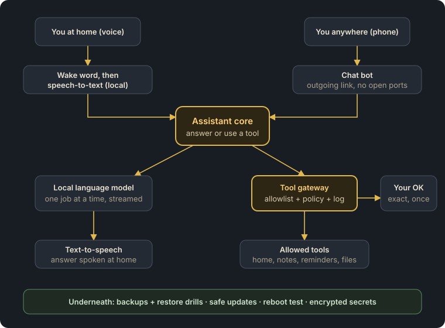
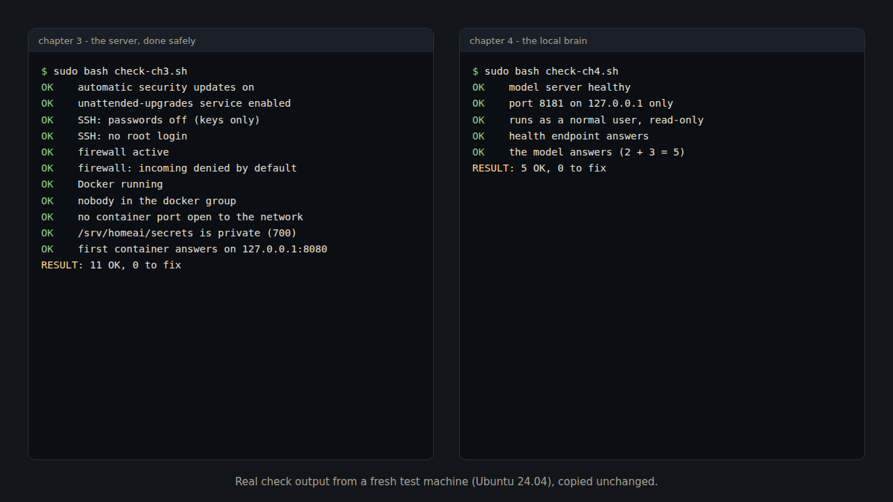

Build your own private home AI
Your own assistant. On your own hardware. Under your control.
A voice assistant that answers from a language model running in your home, that you can message from your phone, and that can do useful things - but only the things you allowed, and the risky ones only after you tap OK.
This course shows you how to build it, step by step, on one small, quiet mini PC - based on a real system that runs every day, rewritten as general, tested steps and templates.
Membership: EUR 8 a month or EUR 64 a year (EU VAT is added at checkout where it applies). Cancel any time. Chapters 1 and 2 are free.

See it working
A real question to the local language model from chapter 4 - on our test machine without a graphics card:
Every chapter ends with a check script. This is the real output after chapters 3 and 4 on a fresh machine:

The voice chapters (5 and 6) are next; a voice demo follows when they are tested.
What makes this course different
- Security first. Most tutorials stop when the assistant can talk, and give the AI a shell. Here the assistant can only use allowlisted tools, and risky actions need an exact, single-use OK on your phone.
- Everything local. Language model, speech-to-text, wake word and voice run on your hardware. No cloud account.
- Operations included. Backups that really restore, safe updates, a reboot test - so it still works next year.
- Small hardware, real numbers. A mini PC with plenty of memory, not an expensive graphics card.
- Tested templates for every chapter, and a new chapter every month.
Who is this for
- For you if you can copy a command into a terminal, read what comes back, and follow steps carefully - and you want a private assistant you understand. No programming needed.
- Not for you if you want a one-click app, or you are not willing to keep a small server updated (the course makes that mostly automatic).
What you need
- A mini PC with 32-64 GB of memory (we use a Ryzen 7 mini PC with 64 GB) - roughly EUR 500-800 new, depending on the model and offers. An older PC works for learning.
- A USB microphone (about EUR 15-40) and any speaker you already have.
- Optional: a small UPS (about EUR 60-120) and a second place for backups (a USB disk or a NAS).
- Time: about one evening per chapter. You ask your own local AI its first question after chapter 4.
Prices are rough 2026 examples, not advice to buy a particular product.
What is inside
- What you will build, and the 10 safety rules - free
- Plan it: hardware, memory, power - free
- 🔒 Linux + Docker, done safely
- 🔒 The local brain: a language model on your mini PC
- 🔒 Hearing: a wake word and speech-to-text
- 🔒 Speaking: natural local text-to-speech
- 🔒 The tool gateway: only allowlisted tools
- 🔒 Approvals on your phone
- 🔒 Secrets: encrypted, never in git, logs or chats
- 🔒 Backups that restore, safe updates, the reboot test
- 🔒 Remote access without open ports
- 🔒 The smart-home link (optional)
Plus a new chapter every month. 🔒 = part of the membership. Chapters 1-10 are written and tested on fresh test machines; 11 and 12 follow, one per month. See the full outline and the FAQ.
Free tools
Small tools from the same workshop - free, no sign-up, they run in your browser:
- Is your n8n ready for 3.0? - npm, npx or Docker, in 30 seconds
- Why Home Assistant's energy cost doesn't match your bill - standing charge, fees, VAT
- All free tools
Join
The complete step-by-step course, all templates and every new monthly chapter are part of the Localhaven membership - EUR 8 a month or EUR 64 a year, cancel any time.